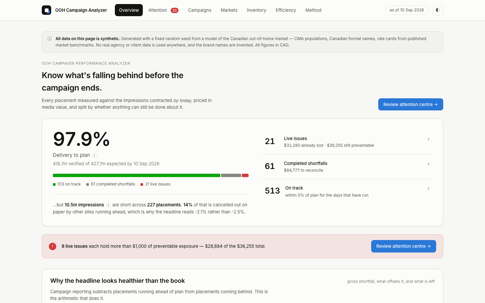

Reconciling media spend inside a WPP/GroupM agency only ever found under-delivering sites after the campaign had ended. This finds them while it is still running — and prices what the shortfall is worth.

10.5m impressions short under a campaign
number reading −2.1% · 4 days to flag a
fault, against 31 to reconciliation
· 44 unit tests
Synthetic dataset, fixed seed · Python · SQL · SQLite · pytest
Saw
Five months at Kinetic, the WPP/GroupM out-of-home agency, one of two interns on the rotational programme. Part of the job was reconciling CAD 1m+ of media spend by hand, rebuilding Excel dashboards daily from tracking-team data.
Asked
Why does this only ever run at the end? Because the comparison it needs — delivered against contracted — only resolves once the booking is over. That is structural, not clerical, and structural problems can be built around.
Built
A placement-level analyzer that measures every site against the impressions contracted by today, separates what can still be fixed from what has to be reconciled, and prices both in media value. Python and SQL do the analysis; the browser only renders what the tests already cover.
Learned
Campaign averages hide more than they show. The book reads −2.1% while 10.5m impressions are short across 227 placements — 14% of the gap cancelled out on paper by other sites running ahead. One campaign reads −0.1% while 27 of its 70 placements are behind.